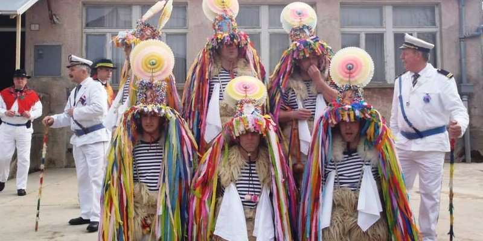
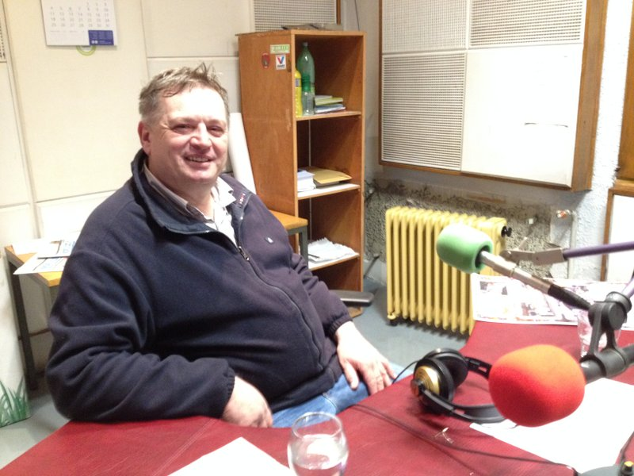

Maškarano vrijeme na blagdan Sveta tri kralja nagovjestili su zvonačari u Žejanama, po mnogočemu specifičnom, mjestašcu nedaleko Matulja. Tradicija nalaže da se točno u ponoć na spomenuti blagdan oglase zvona koja nagovještavaju dolazak tri kralja.
Zvončari rade tri kruga oko sela, po jedan za svakoga od tri kralja te se na taj način označava početak pusta.
 Zvonjava mora bit skladna, uštimana, poput klavira, uhu ugodna. Naime, prema starom vjerovanju, zvonjava mora bit kvalitetna, a ako ona to nije godina će, što se uroda tiče, biti loša. Uzrečica koja to vjerno opisuje kaže nisu zazvonili ni za repu, a kamo za kapuz.
Žejanski zvončari lako su prepoznatljivi. Sa šešira, na vrhu kojeg je sunce, sve do poda vise šarene trakice, resice koje simboliziraju mlado leto. Nose mornarsku majicu, za koju žitelji mjesta nisu sigurni kako je tamo dospjela s obzirom na to da su Žejane udaljene nekih 30 kilometara od mora. Na prsima su dva bijela rupčića koji su tu iz praktičnih razloga – neku dobu, rabi i pot otrt. Tu je neizostavna ovčja koža koja zvončare čuva od zime i koja ih štiti od udaraca zvona te bijele hlače.
Nisu Žejane poznate samo po zvončarima ili folkloru. Neizostavni i, sigurno, temeljni dio njihove kulture je i jezik kojim se starosjedioci služe. Riječ je o Istrorumunjskom, Vlaškom ili Žejanskom. Kako god ga zvali jezik je to koji će malotko od nas razumijeti, jezik koji je uvršten na UNESCO-v Atlas ugroženih jezika, te jezik koji se nalazi i na listi zaštićene nematerijalne kulturne baštine.
Odakle je taj jezik točno došao, teško je sa sigurnošću reći. Krsto Frankopan, preuzevši mjesto iz ruku Austrijanaca u 16. stoljeću, naseljava selo. Krajem Drugog svjetskog rata u Žejanama je živjelo oko 600 ljudi koji su se silom prilika ili odselili ili umrli. Danas ovo malo selo broji nešto više od sto stanovnika.
 Današnje folklorne skupine pokušavaju očuvati tradiciju pjevanja na tanko i debelo, tradicijsko glazbalo - cindru i, naravno, jezik.
Što je to kumarak, bo ili muljara? Kako se na Žejanskom kaže dobar dan ili kako pozvati curu na piće poslušajte u razgovoru Maura Doričića i Borne Šmera.
Borna Šmer
January 10, 2016
© 2016 HRT Radio Rijeka